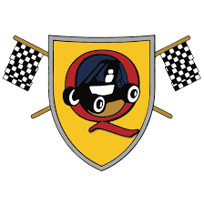

Projects
A proof of concept, low cost gait analyzer with 2 wireless sensor modules to measure basic hip flexion and extension.

Continuously Variable transmission
Modelling and Manufacturing of an automatic transmission system.

An automated fluid dispenser prototype, theoretically usable in medical facilities such as labs and free clinics.